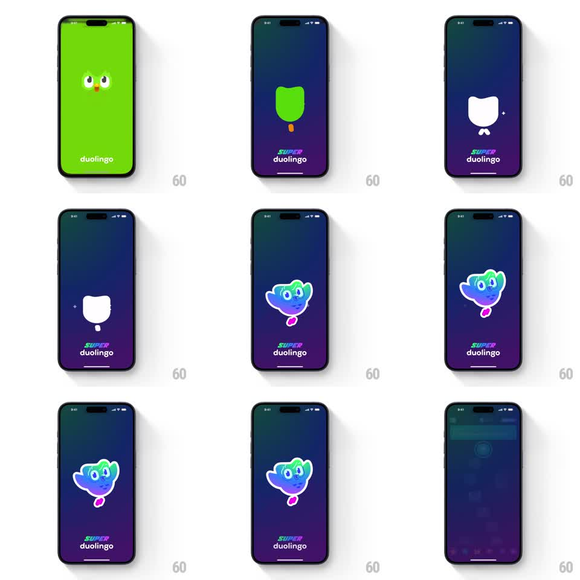

Media
Frame-by-frame

Rebuild this animation 1:1: Duolingo's Super splash - on a deep purple gradient, a flat white owl silhouette morphs and springs into the glowing gradient-filled Super owl, with small sparkles popping around it, before the splash fades into the app.

Rebuild this animation 1:1: Duolingo's Super splash - on a deep purple gradient, a flat white owl silhouette morphs and springs into the glowing gradient-filled Super owl, with small sparkles popping around it, before the splash fades into the app. ## Integration Integration: stack-agnostic spec - springs given as stiffness/damping, timed motions as duration + curve; map every value to your framework and animation library of choice. ## Scene Full-screen dark purple gradient with the SUPER duolingo wordmark low-center. Center stage: the owl mark, starting as a flat white silhouette (first shown as the classic green owl on green in the brand flash, then cut to the purple stage). End state: the Super owl fully rendered - gradient body (green to blue to purple), glowing edges, pink feet. ## Motion spec Pattern: silhouette-to-mascot morph reveal. - The white silhouette scales up slightly (0.9 -> 1.0, 250ms ease-out) with a soft white glow. - The morph: the silhouette ripples (edge wobble, 200ms) then fills with the gradient body from the center outward (400ms, ease-in-out), the fill boundary glowing. - On fill completion the owl springs (scale 1.0 -> 1.12 -> 1.0, spring ~340/16) and two sparkles pop beside the head (scale 0 -> 1 -> 0, 300ms, staggered 120ms). - The owl's eyes blink once (lids close 80ms, open 80ms) 300ms after the spring. - Wordmark fades in (200ms) with the fill; exit: whole splash crossfades to the app home (350ms). ## Calibration - The fill is a center-outward gradient reveal, not a color crossfade - the shape visibly becomes the mascot. - One blink, one spring; the mascot idles still afterward. ## Reduced motion Silhouette crossfades to the full mascot over 250ms; no spring, sparkles, or blink. ## Don't miss - The glow travels with the fill boundary during the morph. - The wordmark never moves - only the owl transforms.